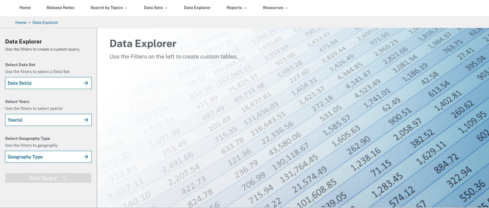

Step through the query (arrow keys work too).Tap a step.
Scroll sideways for more
Start. Three filters wait on the rail: data set, years and geography type. Run Query stays gray until there is something to run.
